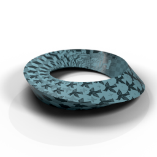

About Me
I'm a recent graduate from Memorial University with a degree in pure mathematics and computer science. Prior to my brief sojourn in academia, I spent 15 years diagnosing and repairing damaged vehicles, and a further year or two in the field of electronics manufacturing. It's left me with a keen attention to detail and a methodical approach to problem-solving, even when the problem is complex and not fully specified.
Technical Toolkit
Across the projects in this portfolio, I have worked with the following technologies:
AI-assisted engineering: I use tools such as GitHub Copilot to accelerate planning, implementation, and refactoring, with verification through tests, manual review, and iteration.
Other Notable Tools
Selected Projects
1. Build-a-Bot Stadium (BBS)
Problem: I wanted one platform to run AI/ML experiments across multiple environments without rebuilding tooling every time.
Solution: I built a modular client/server system with a plugin architecture, persistent state, and a lightweight protocol for real-time control.
- Go server hosts multiple environments and remote bot sessions.
- C# Avalonia client manages multiple servers and bot instances.
- JSONL-over-TCP protocol supports command and state streaming.
- Plugin model keeps the core platform flexible and extensible.
Details
I used modern AI tooling to accelerate planning, documentation drafts, and architecture iteration before implementation.
This is still early-stage, but the foundation is already functional: persistent identities, environment hosting, client orchestration, and extensible server capabilities are in place.
The long-term goal is a general-purpose AI experimentation arena that remains stack-agnostic and easy to extend.
Visual Walkthrough
Open Full Gallery2. Tactile Pattern Classification

Problem: Classify noisy robotic IMU tactile data in real time on constrained hardware.
Solution: I built a full software/hardware co-design pipeline, from model training to FPGA-ready deployment artifacts.
- Custom ISA plus SystemVerilog parser/translator for reusable hardware execution.
- Model-spec-driven Python layer keeps model definitions aligned with hardware constraints.
- Automated training and export flow reduces manual handoff risk.
- Deployable int8 model (~112k params) lands within about 4% of a much larger float32 baseline.
Details
I started from a minimal brief and difficult data, then built a repeatable path from data prep to artifact generation.
A key design constraint was avoiding divide and modulo operations in hardware, which forced a cleaner architecture and tighter implementation discipline.
From Ambiguity to Architecture
Started from a minimalist brief and unclear data, and turned it into a reproducible co-design workflow from training to deployment.
Constraint-led engineering shaped the architecture early and helped keep deployment realistic.
Documentation
This is a journal of my thoughts as the project evolved.
Software/Hardware Co-Design
Open Full Gallery3. Torus Knots and Curvy Plots

Problem: Build a physically realizable developable manifold from flat material and verify the geometry rigorously.
Solution: I reframed the shape mathematically, solved it numerically, and validated it with both physical builds and 3D renders.
- Derived a general numerical workflow for torus-knot-based manifold construction.
- Used SciPy and Shapely to handle integration, root finding, and intersection logic.
- Produced stitch guides, physical prototypes, and rendered verification artifacts.
- Closed the loop between intuition, proof, and fabrication.
Details
The project began as trial-and-error paper modeling and became a full computational geometry pipeline.
Replacing time with angle as the natural parameter made the kinematic framing tractable and helped expose structure in the manifold behavior.
From Paper to Parameters
I moved from visual intuition to a parameterized mathematical model, then used that model to produce consistent physical construction outputs.
From Parameters to Python
The implementation combines numerical quadrature, root-finding, and intersection handling to generate reliable planar nets and construction guides.
The Physical Manifestation of the Solution
Open Full Gallery4. Breadth Beyond Code: Ethics, Mathematics, and Systems Thinking
Problem: Demonstrate analytical depth beyond implementation work.
Solution: I included two writing-heavy projects that apply structured reasoning in different domains.
- Ethics research on cobalt extraction links technical progress with global justice concerns.
- Mathematics project derives geometric structure for a complex quadratic without defaulting to standard shortcuts.
- Both projects show clear argumentation, rigor, and systems-level framing.
Details
These artifacts show the same core workflow used in engineering: frame the problem, choose constraints, build a method, and communicate results clearly.
The Cobalt Blues
A dialogue-driven essay on resource extraction, labour, climate burden, and responsibility. The central focus is that technical transition narratives can conceal structural injustice unless the framework itself is questioned.
A Quadratic Quadrille in Parabolic Pantaloons
A mathematical investigation of complex quadratics that combines symbolic manipulation, geometric interpretation, and numerical tooling. The project develops explicit structure for the vertex and roots via conic incidence.
Why Include This Here: They complement the technical portfolio by showing the same rigor in analysis, writing, and argument design.